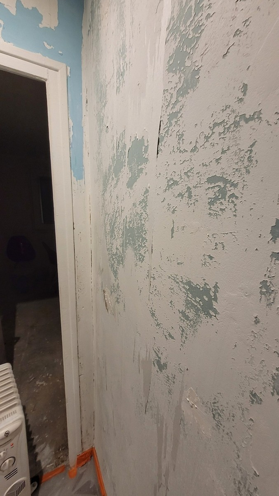
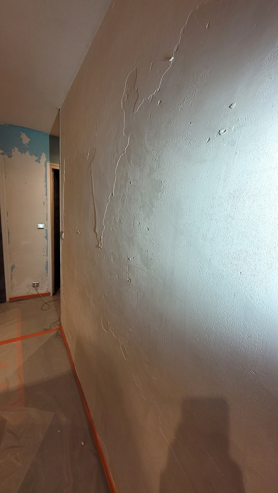
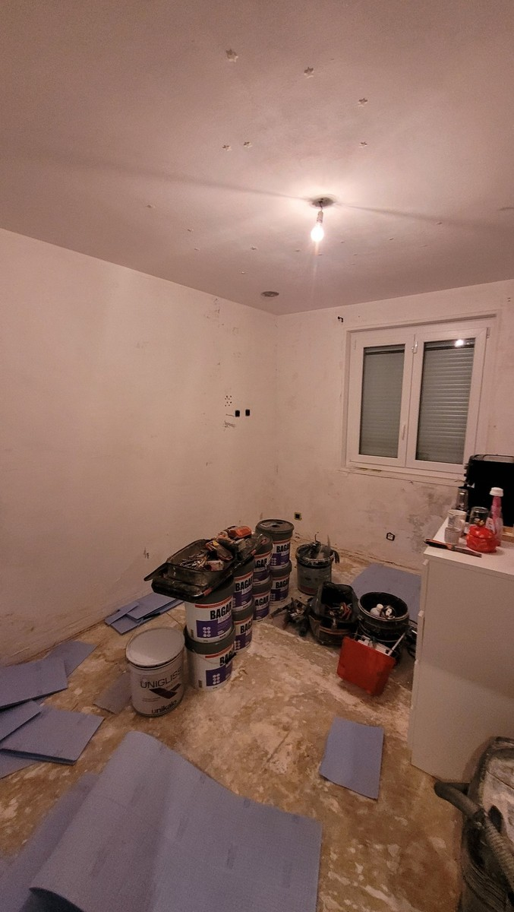

Reprises localisées
Rebouchage, correction de défauts et traitement des zones abîmées lorsque le support est globalement sain.
Préparation de murs et plafonds avant peinture : reprises d’enduit, ratissage, fissures, ponçage et mise à niveau selon l’état du support.
Le ratissage n’est pas systématique. Il est utile lorsque l’état général du mur ou du plafond nécessite une remise à niveau plus large qu’un simple rebouchage localisé.
Rebouchage, correction de défauts et traitement des zones abîmées lorsque le support est globalement sain.
Application d’un enduit de préparation sur une surface plus large afin d’améliorer la planéité et l’homogénéité avant peinture.
Préparation finale du support avant l’application d’une impression adaptée puis de la peinture.
Grattage des anciennes couches, enduits et mise à niveau des supports avant peinture.



Le bon niveau de préparation dépend de l’état du support et du rendu attendu. Un diagnostic évite d’enduire inutilement toute une surface ou, au contraire, de sous-estimer les défauts visibles après peinture.
Le rebouchage corrige des défauts ponctuels. Le ratissage concerne une surface plus large lorsque l’état général du mur ou du plafond demande une remise à niveau avant peinture.
Non. Si le support est suffisamment régulier et sain, des reprises localisées peuvent suffire. Le niveau de préparation dépend du support et du résultat attendu.
Oui, lorsque l’état du plafond le justifie. Les fissures, anciennes reprises ou irrégularités doivent être évaluées avant de choisir la préparation.
Le ratissage améliore l’état de surface mais une fissure doit être traitée selon sa nature. Certaines zones peuvent nécessiter une reprise spécifique avant finition.
Indiquez la commune, les pièces concernées, les surfaces approximatives et l’état actuel des murs ou plafonds. Quelques photos sont particulièrement utiles.
{kind=link}
{kind=link}
{kind=link}